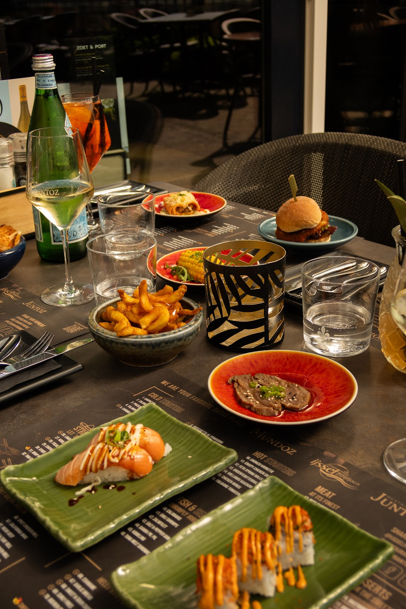
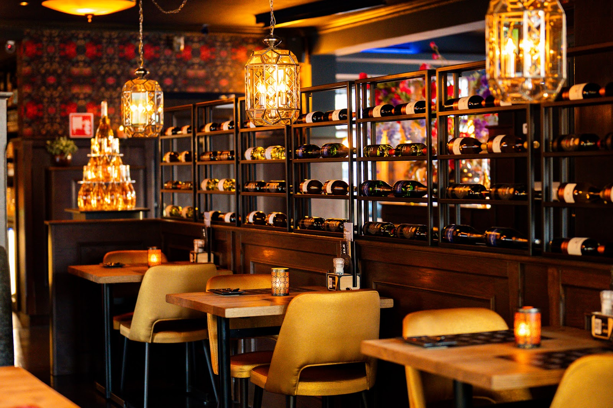
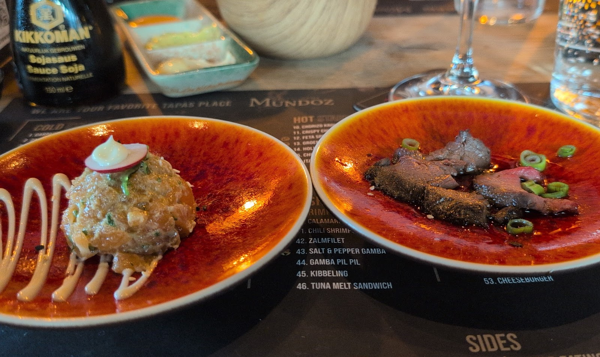
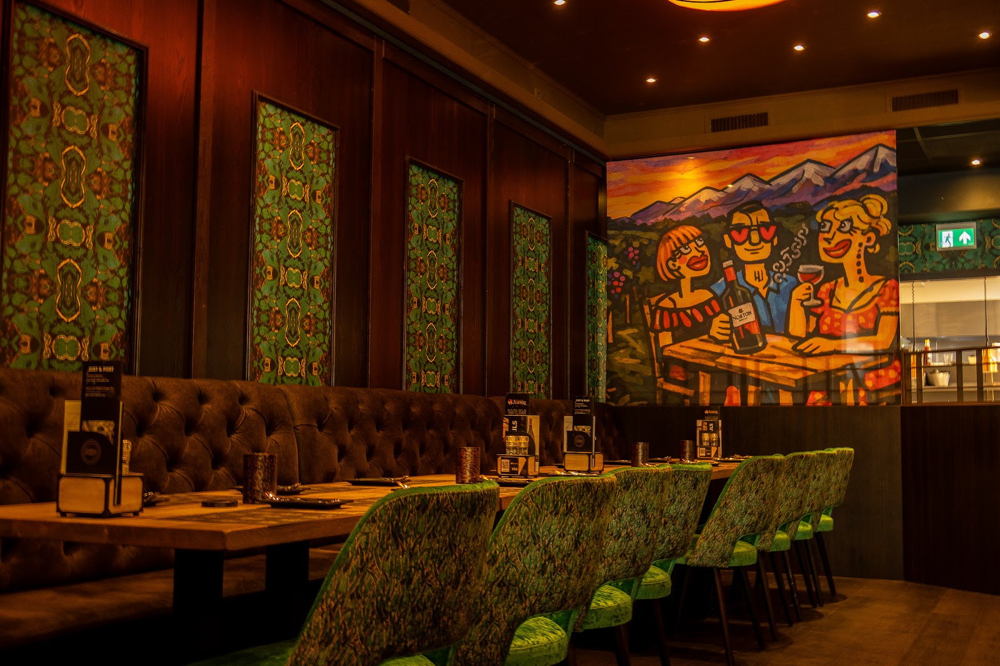
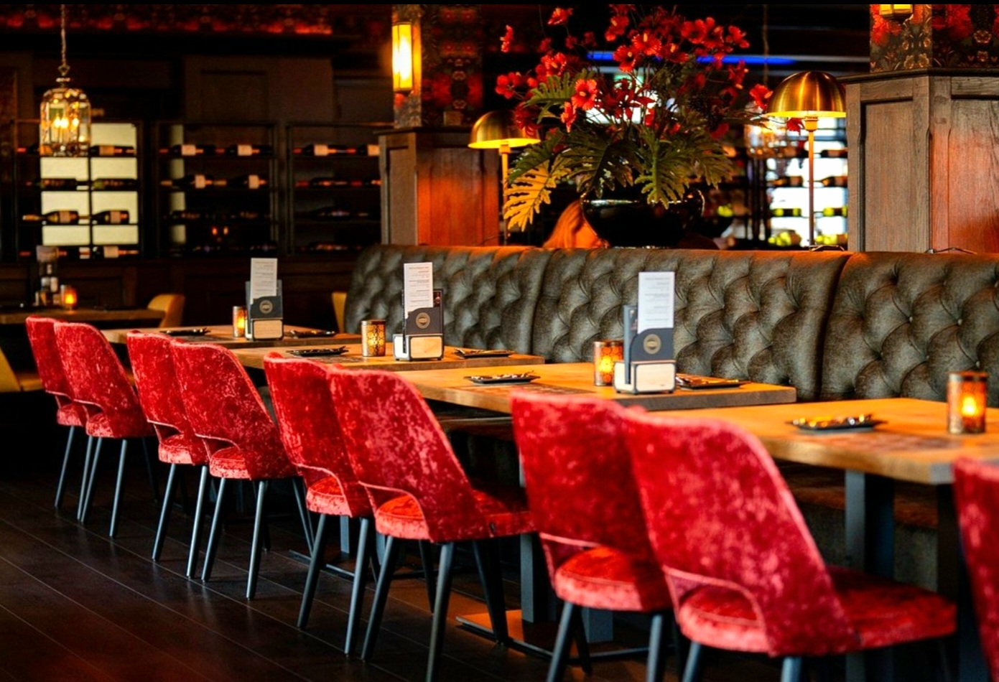
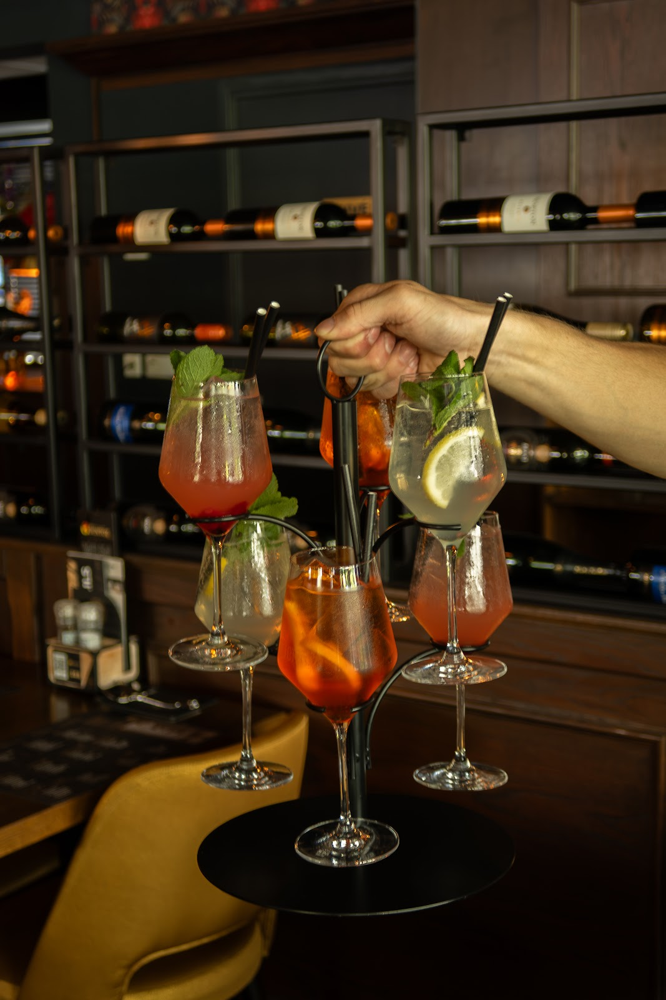
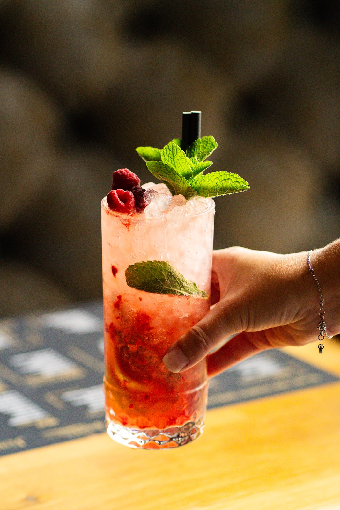
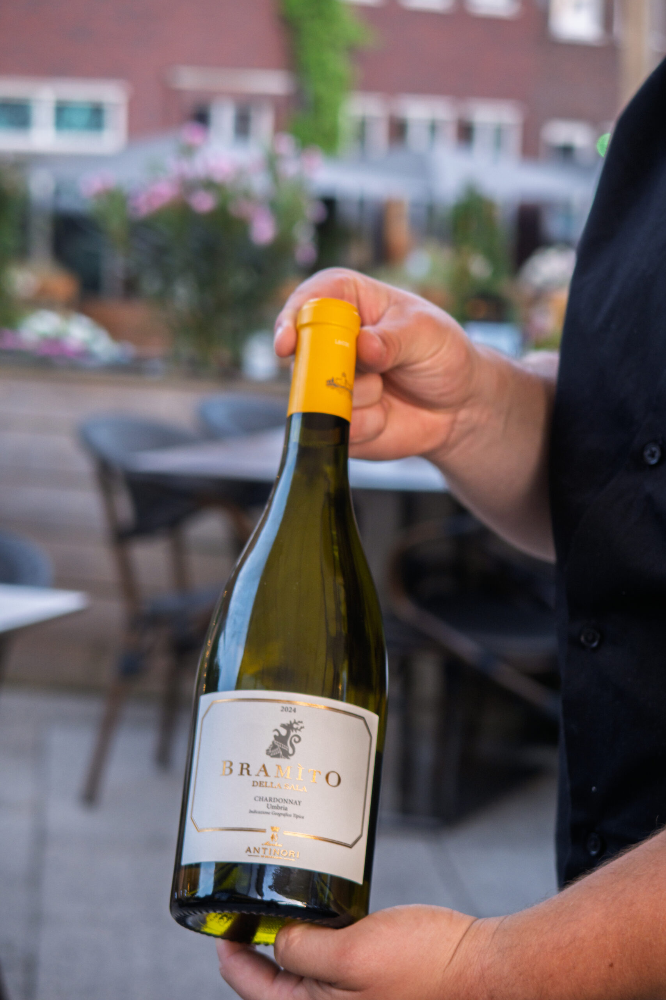

Dinsdag t/m vrijdag
17:00 tot 22:00
Reserveer op het tijdstip dat jou uitkomt en geniet onbeperkt van alle tapasgerechtjes.
Maandag zijn we gesloten.
Tapasrestaurant aan de Aaltenseweg, Lichtenvoorde
Onbeperkt tapas uit de hele wereld: van sushi rolls en streetfood tot oma's stoofpotje en dessert. Je bestelt via de QR-code op tafel, zo vaak als je wilt.
4,8 uit 285 Google-reviews

Je betaalt één prijs en bestelt de hele avond kleine gerechtjes bij. Western classics, streetfood, sushi, vis, vlees van de grill en onbeperkt desserts. Proef wat je wilt, bestel nog een rondje van wat je lekker vond.
Exclusief dranken.
Dinsdag t/m vrijdag
17:00 tot 22:00
Reserveer op het tijdstip dat jou uitkomt en geniet onbeperkt van alle tapasgerechtjes.
Maandag zijn we gesloten.
Zaterdag en zondag
Early dinner16:00 tot 19:00
Late dinner19:30 tot 22:30
Drie uur lang onbeperkt genieten. Later aanschuiven mag, de eindtijd blijft wel hetzelfde.
Een tafeltje bij het raam? Zeg het als je belt.
Bel 0544 745 009
"Als je aan komt lopen ziet het er van buiten al heel sfeervol en gezellig uit. Eenmaal binnen een heel vriendelijk ontvangst."
Zoveel gerechtjes staan er genummerd op onze kaart. Van carpaccio (nummer 1) tot een bolletje aardbeienijs (nummer 97). Kies op nummer, scan de QR-code en de keuken gaat aan de slag.

Met een vlammetje gemarkeerd: Chef's Choice. Er zijn ook vegetarische gerechten. Allergie? Meld het bij je reservering, we hebben een allergenenkaart.
Carpaccio, zalmwrap, prosciutto melone, salmon tartar, Caribisch gevuld eitje, bruschetta al pomodoro, honey brie, beef tataki, sashimi salmon
Chorizo kroketje, crispy chicken salad, feta spring rolls, groentebitterbal, Hollands kaaskroketje, chicken wings, Italiaans tomatensoepje
Beef chimichurri, sweet & sour chicken, Thai beef, tournedos, T-bone steak, chicken teriyaki, lamb skewer, beef teriyaki, pepper steak
Loaded nacho's, Korean BBQ chicken, focaccia pizza, chicken gyoza, gyros wrap, wrap pollo, Thai curry chicken
Beef tenderloin bites, oma's stoofpotje, spring rolls, cheesedippers, gehaktballetje saté, crispy chicken burger, chicken saté
Calamaris, chili shrimps, zalmfilet, salt & pepper gamba's, gamba pil pil, kibbeling, tuna melt sandwich
Hotdog, paprika goatcheese, schnitzel, spareribs, speklapje BBQ style, BBQ beef skewer, cheeseburger
Beef carpaccio roll, dragon roll, torched salmon roll, chicken mango maki, tiger salmon roll, cucumber maki, spicy chicken roll, California maki, nigiri beef, surf & turf roll, avocado chicken roll, nigiri flamed salmon
Edamame, garlic bread, sweet & sour cucumber, curly fries, boerenfriet, corn ribs, sweet potato fries, garlic mushrooms, noodles, Greek salad
Bastognemousse, Oreo brownie, speculoos cheesecake, monchoutaartje, witte chocolademousse, crème brûlée, espresso tiramisu, spekkoek, dame blanche, apple crumble met vanille-ijs, pistache popdot en zes soorten ijs en sorbet
4,8 uit 285 reviews op Google
"Prima eten, zo lekker! Ben bij alle Mundoz geweest. Super concept, staat bij mij op nr 1. Bediening, sfeer, alles is top ! Tafeltje gevraagd bij t raam, top en bestellen via QR code werkt prima"


"Nette en gezellige etablissement in Lichtenvoorde. Met collega's heerlijk gegeten en gedronken. Vriendelijk en zeer attent personeel en voor herhaling vatbaar."
"Prima zaak goed en lekker gegeten het liep allemaal goed."
Bij tapas hoort een goed glas. Onze wijnen zijn met zorg gekozen, met bekende huizen als Masi, Antinori en het Argentijnse Norton. Liever een cocktail? Onze bartender maakt signature cocktails, martini's, mojito's en zijn eigen specials.



Op kerstavond, eerste en tweede kerstdag geniet je van ons tapasdiner, aangevuld met onze Christmas Specials.
Early Christmas Dinner
16:00 tot 19:00
Late Christmas Dinner
19:30 tot 22:30
Per persoon, exclusief dranken.
Reserveren voor kerst gaat alleen online, telefonisch kan helaas niet. Maximaal 16 personen per groep, en geef kinderstoelen door bij je reservering.
Reserveer je kerstdiner onlineKom je met meer dan 16 personen, dan verdelen we jullie over meerdere tafels. Stuur een aanvraag met datum, tijdslot en aantal personen. We laten zo snel mogelijk weten of het lukt.
Groepsaanvraag doenEen giftcard van Juntoz koop je in het restaurant, tijdens openingstijden. Kies een bedrag van €25, €50 of €100, of een diner voor 1 of 2 personen.
We zoeken collega's voor de keuken en de bediening. Je bent minimaal 16 jaar. Mail je motivatie naar info@restaurantjuntoz.nl.
| Maandag | Gesloten |
| Dinsdag | 17:00 - 22:30 |
| Woensdag | 17:00 - 22:30 |
| Donderdag | 17:00 - 22:30 |
| Vrijdag | 17:00 - 22:30 |
| Zaterdag | 16:00 - 23:00 |
| Zondag | 16:00 - 23:00 |
Gratis parkeren kan bij de Hamalandhal (Van der Meer de Walcherenstraat 3). Van daar loop je in een paar minuten naar ons toe.
Voor een groepsaanvraag of een vraag. Reserveren voor vandaag? Bel dan even, dat gaat sneller.